SpatialCopyInference workflow
SpatialCopyInference_workflow.RmdIntroduction
SpatialCopyInference infers somatic copy number aberrations (SCNAs) directly from Xenium spatial transcriptomics data. This vignette demonstrates the complete SpatialCopyInference workflow using a human ovarian cancer dataset as an example.
First, packages necessary for this vignette are loaded.
Data import
This workflow uses a Xenium human ovarian cancer dataset from 10x Genomics: FFPE Human Ovarian Cancer with the 5K Human Pan Tissue and Pathways Panel plus 100 custom genes.
Users wishing to reproduce this analysis should first download the Xenium output files from:
https://www.10xgenomics.com/datasets/xenium-prime-ffpe-human-ovarian-cancer
Matched single-cell Gene Expression Flex data were used for cell type annotation: Human Ovarian Cancer FFPE Single Cell Gene Expression Flex.
https://www.10xgenomics.com/datasets/17k-human-ovarian-cancer-scFFPE
Cell type annotations were generated using the 10x Genomics label transfer workflow and subsequently refined through manual curation.
https://www.10xgenomics.com/analysis-guides/xenium-cell-type-annotation
The Xenium data and accompanying cell type annotations are imported
using import_xenium(). This function loads Xenium output
files into a Seurat object and optionally adds cell type annotations
from a CSV file.
# Path to Xenium output directory
data_dir <- "path/to/Xenium_outputs/outs"
# Path to refined cell type annotations
annotation_file <- "path/to/cell_type_annotations.csv"
# Import Xenium data
xenium.obj <- import_xenium(data_dir, annotation_file)
# Dataset dimensions
dim(xenium.obj)
#> [1] 5101 407124
# Check if any unannotated cells
sum(is.na(xenium.obj$group))
#> [1] 513Quality control
Cell quality is assessed using the distributions of detected genes
(nFeature_Xenium) and transcript counts
(nCount_Xenium).
# Calculate quantiles for genes and counts
probs <- c(0.01, 0.02, 0.05, 0.1, 0.25, 0.5, 0.75)
feature_quantiles <- data.frame(
quantile = names(quantile(xenium.obj$nFeature_Xenium, probs)),
features = as.numeric(quantile(xenium.obj$nFeature_Xenium, probs))
)
count_quantiles <- data.frame(
quantile = names(quantile(xenium.obj$nCount_Xenium, probs)),
counts = as.numeric(quantile(xenium.obj$nCount_Xenium, probs))
)
features_df <- data.frame(nFeature_Xenium = xenium.obj$nFeature_Xenium)
counts_df <- data.frame(nCount_Xenium = xenium.obj$nCount_Xenium)
# Plot distribution info on top of Violin plots using ggplot2
# add + 1 to counts for log scale visualisation
Vln_features <- ggplot(features_df, aes(x = "", y = nFeature_Xenium + 1)) +
geom_violin(fill = "salmon", colour = "black", linewidth = 0.3) +
geom_boxplot(width = 0.08, outlier.shape = NA, linewidth = 0.3) +
geom_hline(yintercept = feature_quantiles$features + 1,
linetype = "dashed", linewidth = 0.4) +
geom_text(data = feature_quantiles,
aes(x = Inf, y = features + 1,label = paste0(quantile, "(",features + 1,")")),
inherit.aes = FALSE, hjust = 1.1, vjust = -0.4, size = 3.5) +
scale_y_log10() +
annotation_logticks(sides = "l") +
labs(y = "nFeature_Xenium + 1", x = NULL, title = "nFeature_Xenium")+
theme_classic()
Vln_counts <- ggplot(counts_df, aes(x = "", y = nCount_Xenium + 1)) +
geom_violin(fill = "salmon", colour = "black", linewidth = 0.3) +
geom_boxplot(width = 0.08, outlier.shape = NA, linewidth = 0.3) +
geom_hline(yintercept = count_quantiles$counts + 1,
linetype = "dashed", linewidth = 0.4) +
geom_text(data = count_quantiles,
aes(x = Inf, y = counts + 1,label = paste0(quantile, "(",counts + 1,")")),
inherit.aes = FALSE, hjust = 1.1, vjust = -0.4, size = 3.5) +
scale_y_log10() +
annotation_logticks(sides = "l") +
labs(y = "nCount_Xenium + 1", x = NULL, title = "nCount_Xenium")+
theme_classic()
print(Vln_features | Vln_counts) Based on these distributions, low quality cells are removed using
Based on these distributions, low quality cells are removed using
filter_cells().
# Dataset dimensions before filtering
dim(xenium.obj)
#> [1] 5101 407124
# Filter low quality cells
xenium.obj <- filter_cells(xenium.obj)
# Dataset dimensions after filtering
dim(xenium.obj)
#> [1] 5101 398993Gene filtering
Lowly expressed genes are filtered using filter_genes()
prior to downstream analyses.
# Number of genes before filtering
nrow(xenium.obj)
#> [1] 5101
# Filter lowly expressed genes
xenium.obj <- filter_genes(xenium.obj,
min_cells = 50,
min_counts = 50)
# Number of genes after filtering
nrow(xenium.obj)
#> [1] 5090
# Display removed genes
head(xenium.obj@misc$removed_genes, 20)
#> [1] "CYP2A6" "EIF1AY"
#> [3] "F2" "HPV16-E6"
#> [5] "HPV16-E7" "HPV18-E6"
#> [7] "Human-CTNNB1-S33C-ALT:G" "Human-FGFR3-R248H-ALT:A"
#> [9] "Human-FGFR3-R248H-WT:A" "Human-PTEN-G129E-WT:A"
#> [11] "SRY"Visualise cells
After quality control, annotated cells are visualised using
plot_cells().
# Plot annotated cells
plot_cells(xenium.obj)
Normalisation
Normalisation is performed using normalise_data(), which
applies Seurat::NormalizeData() with the “LogNormalize”
method and converts the resulting values to log2 scale.
# Perform normalisation
xenium.obj <- normalise_data(xenium.obj)
# Example log2-normalised expression values for selected genes
xenium.obj@assays$Xenium$data[c("CCNE1", "MKI67", "TP53"), 1:5]
#> 3 x 5 sparse Matrix of class "dgCMatrix"
#> aaaaebmm-1 aaaafhpp-1 aaaahcem-1 aaaakeoi-1 aaaalald-1
#> CCNE1 . . 5.096877 . .
#> MKI67 . . . . 5.125085
#> TP53 5.087603 . 5.096877 . .Positional information
The package includes pre-computed hg38 positional information for
genes, chromosomes and chromosome arms. These resources were generated
using get_genomic_info() and
create_hg38_annotation() and can be regenerated if
required.
hg38_gene_info contains gene level positional
information, while hg38_chrom_info contains chromosome and
centromere coordinates used throughout SpatialCopyInference
analyses.
Chromosome arm means
Chromosome arm means for each cell are computed using
compute_arm_means(), which aggregates gene expression
values within each chromosome arm and calculates the mean expression.
This summarises expression at the chromosome arm level, which is the
basis for subsequent copy number inference. The minimum number of genes
required per chromosome arm can be specified.
# Compute arm means
arm_means_matrix <- compute_arm_means(xenium.obj,
min_genes_per_arm = 5)
# Show values for a subset chromosome arms and cells
arm_means_matrix[1:5, 1:5]
#> aaaaebmm-1 aaaafhpp-1 aaaahcem-1 aaaakeoi-1 aaaalald-1
#> chr1_p 0.3377456 0.2075805 0.1570955 0.3416053 0.3577399
#> chr1_q 0.2174228 0.2243669 0.1656896 0.2330327 0.3660775
#> chr2_p 0.1884297 0.2338484 0.2359665 0.2408403 0.1898180
#> chr2_q 0.1695868 0.3413992 0.2520300 0.3254727 0.3340076
#> chr3_p 0.2898429 0.4938419 0.3832238 0.4893765 0.1541379Reference selection
Reference profiles used for somatic copy number inference are
computed using compute_reference(). Reference profiles can
be generated from all cells, multiple selected cell populations combined
or individual cell populations.
In this ovarian cancer dataset, we compare the default reference generated from all cells with a reference derived from the normal epithelial populations Fallopian Tube Epithelium and Secretory Epithelial Cells, which include the cell types of origin thought to give rise to high-grade serous ovarian cancer (HGSOC). Normal diploid reference populations are preferred because they are less likely to harbour SCNAs and therefore provide a more stable baseline for copy number inference. When a suitable diploid reference population is unavailable, the global mean across all cells can be used instead.
A detailed comparison of chromosome arm mean expression profiles across annotated cell populations is available on the companion website under Cell type means.
# Global reference (default)
global_ref_arm_means <- compute_reference(
xenium.obj
)
global_ref_arm_means$group <- "All Cells"
# Combined epithelial reference
epithelium_ref_arm_means <- compute_reference(
xenium.obj,
group_var = "group",
group_names = c("Fallopian Tube Epithelium", "Secretory Epithelial Cells")
)
epithelium_ref_arm_means$group <- "Epithelium"
# Fallopian Tube Epithelium
ft_ref_arm_means <- compute_reference(
xenium.obj,
group_var = "group",
group_names = "Fallopian Tube Epithelium")
ft_ref_arm_means$group <- "Fallopian Tube Epithelium"
# Secretory Epithelial Cells
secretory_ref_arm_means <- compute_reference(
xenium.obj,
group_var = "group",
group_names = "Secretory Epithelial Cells")
secretory_ref_arm_means$group <- "Secretory Epithelial Cells"
# Proliferative Tumour Cells (comparison only)
tumour_ref_arm_means <- compute_reference(
xenium.obj,
group_var = "group",
group_names = "Proliferative Tumour Cells")
tumour_ref_arm_means$group <- "Proliferative Tumour Cells"The reference profiles are compared below alongside representative normal and tumour cell populations.
arm_means_to_plot <- dplyr::bind_rows(
global_ref_arm_means,
epithelium_ref_arm_means,
ft_ref_arm_means,
secretory_ref_arm_means,
tumour_ref_arm_means)
# Plot profiles
ggplot() +
geom_vline(
xintercept = hg38_chrom_info$cum_centromere_mid,
linetype = "dashed",
linewidth = 0.3
) +
geom_vline(
xintercept = hg38_chrom_info$cum_length,
linewidth = 0.3
) +
geom_segment(
data = dplyr::filter(
arm_means_to_plot,
arm == "p"
),
aes(
x = p_start,
xend = p_end,
y = mean_arm_expr,
colour = group
),
linewidth = 0.8,
linetype = "11"
) +
geom_segment(
data = dplyr::filter(
arm_means_to_plot,
arm == "q"
),
aes(
x = q_start,
xend = q_end,
y = mean_arm_expr,
colour = group
),
linewidth = 0.8,
linetype = "11"
) +
scale_colour_manual(
values = c(
"Proliferative Tumour Cells" = "#F1CE63",
"Epithelium" = "purple",
"Fallopian Tube Epithelium" = "#59A14F",
"Secretory Epithelial Cells" = "#F28E2B",
"All Cells" = "black"
)
) +
scale_x_continuous(
breaks = hg38_chrom_info$cum_chromosome_mid,
labels = hg38_chrom_info$chrom,
expand = c(0, 0)
) +
theme_classic() +
theme(
axis.text.x = element_text(
colour = "black",
size = 8,
angle = 50,
hjust = 1
),
axis.text.y = element_text(
colour = "black",
size = 9
),
axis.title.x = element_text(
colour = "black",
size = 8
),
axis.title.y = element_text(
colour = "black",
size = 8
),
legend.text = element_text(
colour = "black",
size = 8
),
legend.position = "right",
legend.title = element_blank()
) +
ylim(0, 1) +
labs(
x = "Chromosome",
y = "Log-normalised expression",
title = "Reference comparison"
)
Example cell profiles
Example cell profiles can be visualised using
plot_cell_profiles(). Below, representative normal and
tumour cells are shown using the epithelial reference profile. Note the
distinct deviations from the reference.
plot_cell_profiles(xenium.obj = xenium.obj,
cell_id = "aamfeehk-1", # Fallopian Tube Epithelium
arm_means_matrix = arm_means_matrix,
reference = epithelium_ref_arm_means)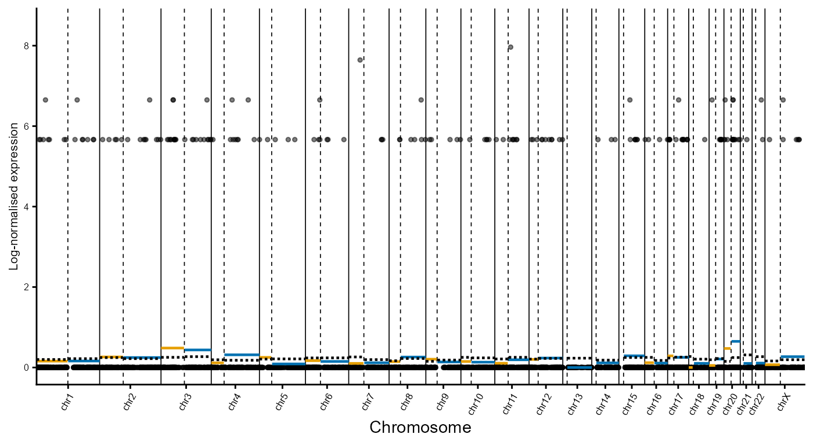
plot_cell_profiles(xenium.obj = xenium.obj,
cell_id = "aabgmdld-1", # Ciliated Epithelial Cell
arm_means_matrix = arm_means_matrix,
reference = epithelium_ref_arm_means)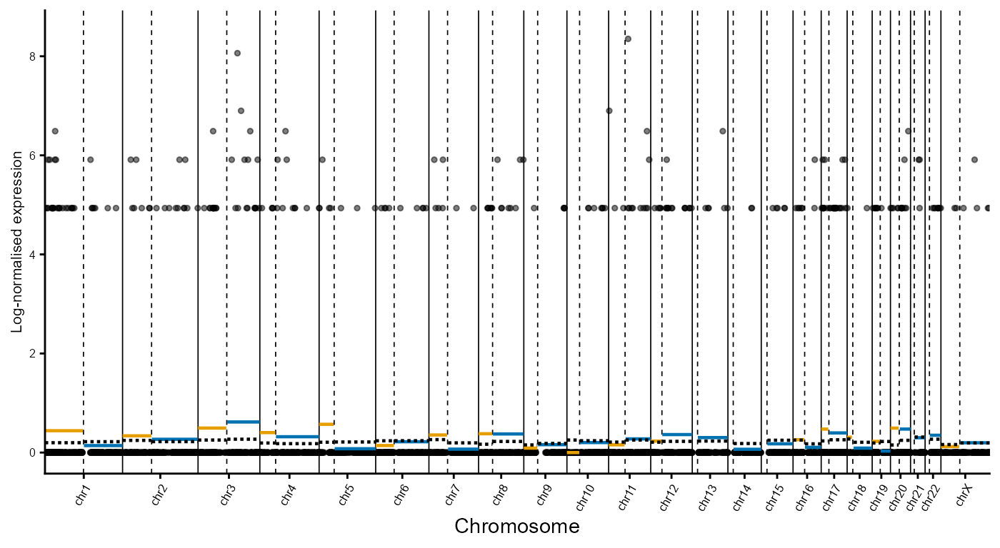
plot_cell_profiles(xenium.obj = xenium.obj,
cell_id = "aaajknem-1", # Tumour Cell
arm_means_matrix = arm_means_matrix,
reference = epithelium_ref_arm_means)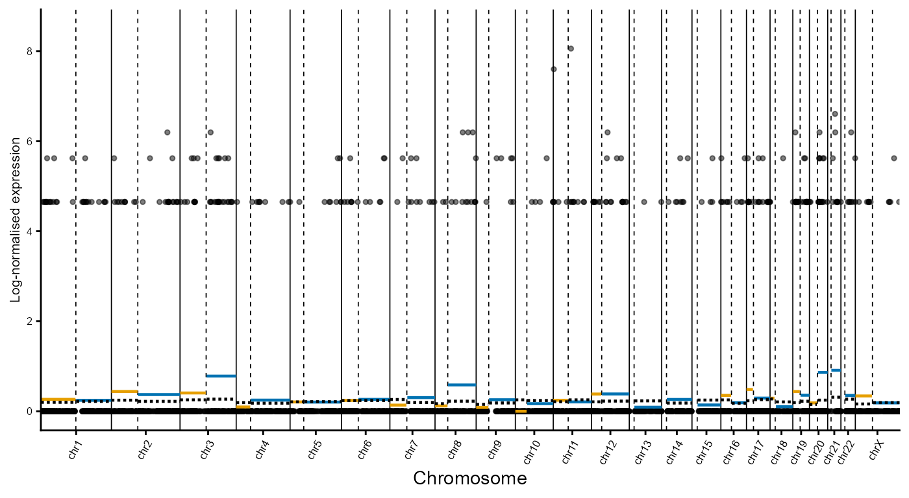
plot_cell_profiles(xenium.obj = xenium.obj,
cell_id = "aaabianm-1", # Proliferative Tumour Cell
arm_means_matrix = arm_means_matrix,
reference = epithelium_ref_arm_means)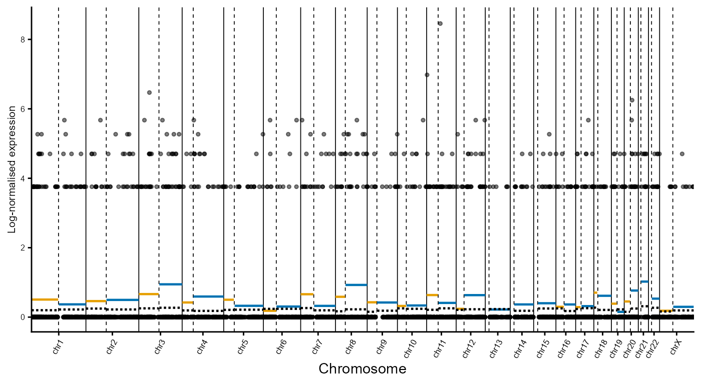
Log ratio profiles
Somatic copy number inference is performed by comparing chromosome
arm mean expression levels against the chosen reference profile. Here,
chromosome arm log ratios are computed using the epithelial reference
with compute_arm_ratios(). In this example, the epithelial
reference is defined as the combination of Fallopian Tube
Epithelium and Secretory Epithelial Cells cell populations
specified via the reference argument.
# Compute chromosome arm ratios using Epithelium as reference
arm_ratios <- compute_arm_ratios(arm_means_matrix,
xenium.obj,
group_var = "group",
reference = c("Fallopian Tube Epithelium", "Secretory Epithelial Cells")
)
# Show ratios for a subset chromosome arms and cells
arm_ratios[1:5, 1:5]
#> aaaaebmm-1 aaaafhpp-1 aaaahcem-1 aaaakeoi-1 aaaalald-1
#> chr1_p 0.139009573 0.008844501 -0.041640487 0.142869336 0.15900393
#> chr1_q -0.002075896 0.004868228 -0.053809067 0.013534031 0.14657882
#> chr2_p -0.057486228 -0.012067545 -0.009949432 -0.005075618 -0.05609800
#> chr2_q -0.050588558 0.121223913 0.031854697 0.105297385 0.11383231
#> chr3_p 0.037109571 0.241108619 0.130490515 0.236643205 -0.09859543
# Save processed Xenium object for downstream analyses
saveRDS(arm_ratios,
file = "arm_ratios_ovarian.rds")Example log ratio profiles
Example log ratio cell profiles can be visualised using
plot_cell_log_ratios(). Below, representative normal and
tumour cells are shown using the epithelial reference profile.
plot_cell_log_ratios(xenium.obj = xenium.obj,
cell_id = "aamfeehk-1", # Fallopian Tube Epithelium
arm_ratios = arm_ratios,
reference_groups = c("Fallopian Tube Epithelium", "Secretory Epithelial Cells")
) 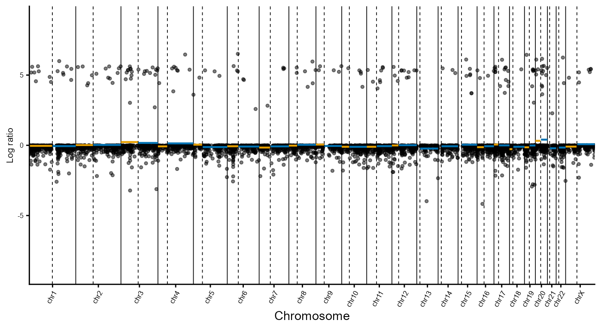
plot_cell_log_ratios(xenium.obj = xenium.obj,
cell_id = "aabgmdld-1", # Ciliated Epithelial Cell
arm_ratios = arm_ratios,
reference_groups = c("Fallopian Tube Epithelium", "Secretory Epithelial Cells")
) 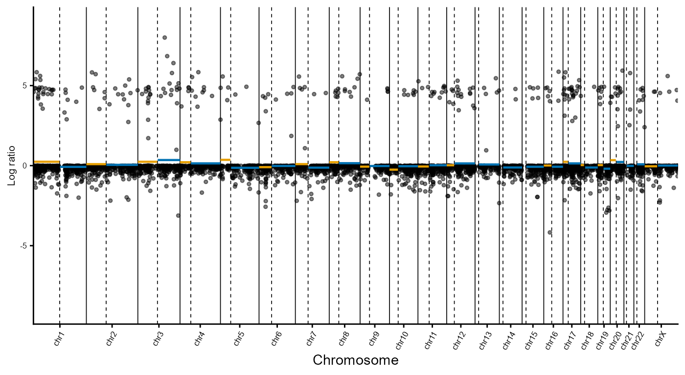
plot_cell_log_ratios(xenium.obj = xenium.obj,
cell_id = "aaajknem-1", # Tumour Cell
arm_ratios = arm_ratios,
reference_groups = c("Fallopian Tube Epithelium", "Secretory Epithelial Cells")
)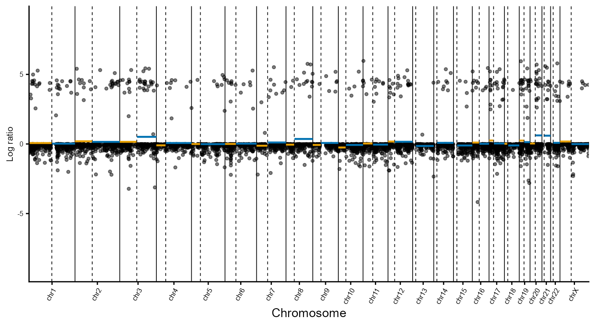
plot_cell_log_ratios(xenium.obj = xenium.obj,
cell_id = "aaabianm-1", # Proliferative Tumour Cell
arm_ratios = arm_ratios,
reference_groups = c("Fallopian Tube Epithelium", "Secretory Epithelial Cells")
)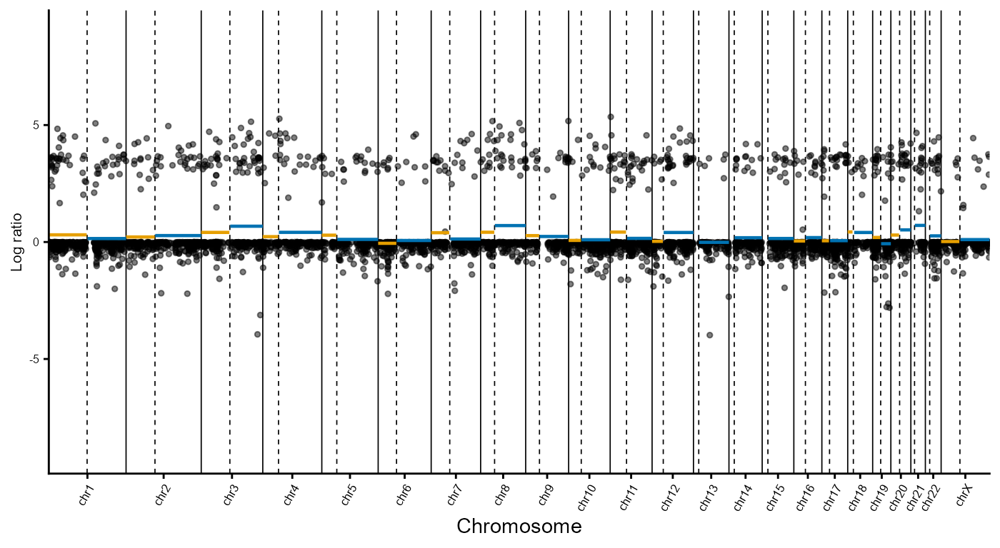
Inferred SCNAs by cell type
Chromosome arm-level SCNAs can be visualised as a clustered heatmap
using plot_ratio_heatmap. This identifies recurrent
chromosome arm-level SCNAs in tumour-associated cell populations,
whereas non-malignant populations remain largely copy number
neutral.
plot_ratio_heatmap(
xenium.obj,
reference_group = c("Fallopian Tube Epithelium","Secretory Epithelial Cells")
)
Spatial clustering
Spatial clustering is performed to incorporate spatial context into SCNA inference, based on the assumption that neighbouring cells are more likely to share common evolutionary trajectories.
Spatial clustering is implemented using BANKSY*, which integrates neighbourhood composition and local spatial structure to identify spatially coherent cell populations:
*Singhal, V., Chou, N., Lee, J. et al. BANKSY unifies cell typing and tissue domain segmentation for scalable spatial omics data analysis. Nat Genet 56, 431–441 (2024). https://doi.org/10.1038/s41588-024-01664-3
Here, BANKSY is applied to chromosome arm log ratio profiles
generated by compute_arm_ratios() using
compute_spatial_clusters(). The parameter
lambda controls the contribution of spatial information,
while resolution controls cluster granularity. Optimal
values are dataset dependent and may require tuning by the user.
A detailed comparison of clustering parameters for the ovarian cancer dataset is available on the companion website under Cluster parameter optimisation.
# BANKSY clustering using lambda = 0.8
BANKSY.obj <- compute_spatial_clusters(
arm_ratios = arm_ratios,
xenium.obj = xenium.obj,
lambda = 0.8,
resolution = c(0.1)
)Cluster visualisation
The resulting clusters can be visualised using
plot_cluster_heatmaps(). Multiple resolutions can be
evaluated simultaneously when optimising clustering parameters. In this
ovarian cancer dataset, the identified clusters exhibit distinct
chromosome arm-level SCNA profiles, resolving tumour, non-malignant and
intermediate populations.
Validation of inferred chromosome arm level SCNAs, including recurrent chr3q and chr8q gains, against SCNAs observed in TCGA Ovarian Serous Cystadenocarcinoma is available on the companion website under TCGA.
# Plot cluster heatmap for lambda = 0.8 and resolution = 0.1
heatmap <- plot_cluster_heatmaps(
BANKSY.obj,
resolutions = c(0.1)
)
heatmap$res_0.1 Cluster assignments can then be transferred back to the Xenium object
using
Cluster assignments can then be transferred back to the Xenium object
using add_banksy_clusters().
# Add arm clusters of desired lambda and resolution back to main Xenium object
xenium.obj <- add_banksy_clusters(xenium.obj,
BANKSY.obj,
resolution = 0.1)Spatial cluster assignments can be visualised using
plot_spatial_clusters().
# Custom colour pallete
col_pal_BANKSY <- c("1"="#8CD17D","2"="#F28E2B","3"="#4E79A7","4"="#F1CE63")
# Plot spatial clusters
plots <- plot_spatial_clusters(
xenium.obj,
cluster_palette = col_pal_BANKSY
)
# Plot one image with all spatial clusters
plots$spatial_clusters_plot
# Plot each spatial cluster separately
plots$spatial_clusters_plot_facets The composition of cell groups across BANKSY-derived spatial clusters is
visualised using
The composition of cell groups across BANKSY-derived spatial clusters is
visualised using plot_cluster_composition(). For each cell
group, the proportion of cells assigned to each spatial cluster is
displayed as a stacked bar plot. Cell groups are ordered by their
dominant spatial cluster to facilitate comparison of cluster composition
patterns.
# Custom colour palette
col_pal_BANKSY <- c("#8CD17D","#F28E2B","#4E79A7","#F1CE63")
# Plot cluster composition with custom palette
plot_cluster_composition(xenium.obj,
cluster_palette = col_pal_BANKSY
)
Spatial cluster annotation
Annotated cell types within spatial clusters are plotted using
plot_cluster_annotated. Here, manual_col and
legend_order are used to define a custom colour scheme and
legend order for the cell type annotations.
plot_cluster_annotated(
xenium.obj = xenium.obj,
cluster_id = 1,
group_palette = manual_col,
legend_order = legend_order) +
theme(legend.position = "right")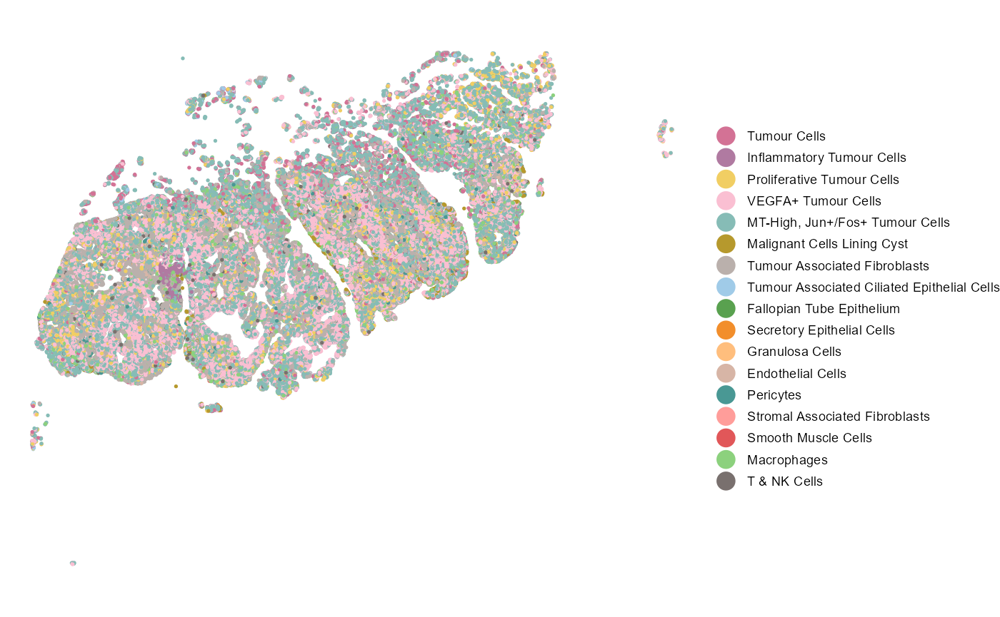
plot_cluster_annotated(
xenium.obj = xenium.obj,
cluster_id = 2,
group_palette = manual_col,
legend_order = legend_order) +
theme(legend.position = "right")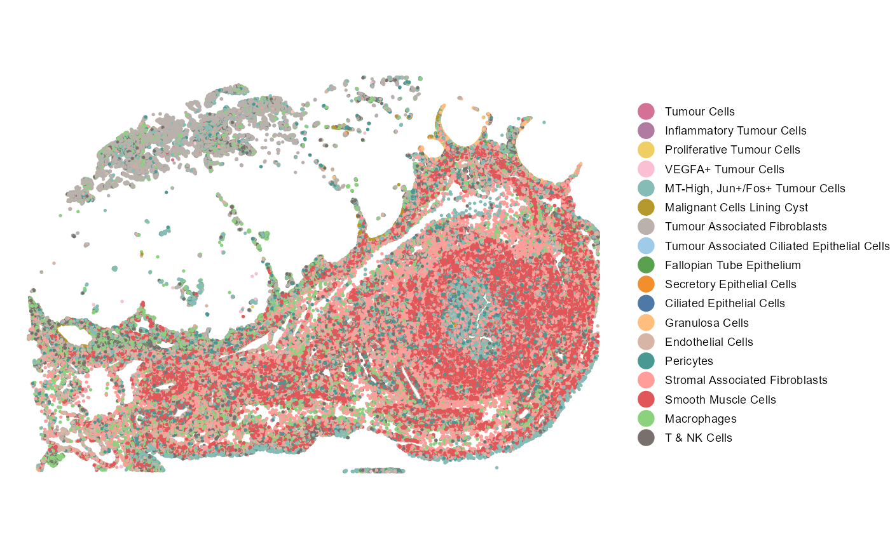
plot_cluster_annotated(
xenium.obj = xenium.obj,
cluster_id = 3,
group_palette = manual_col,
legend_order = legend_order) +
theme(legend.position = "right")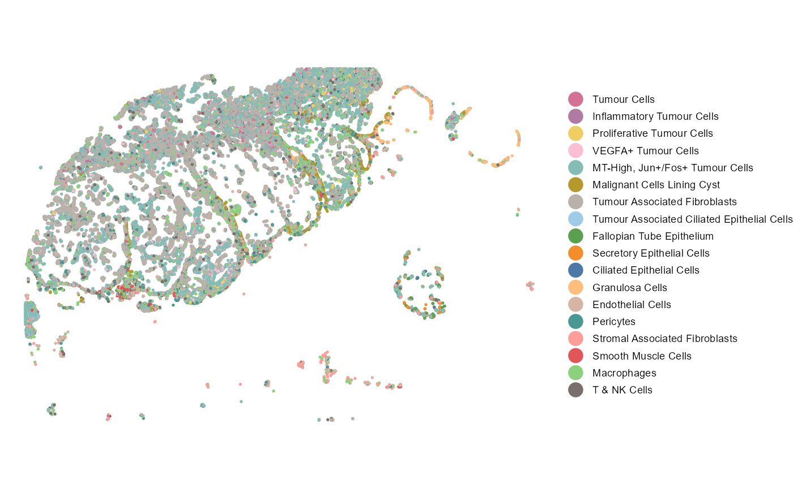
plot_cluster_annotated(
xenium.obj = xenium.obj,
cluster_id = 4,
group_palette = manual_col,
legend_order = legend_order) +
theme(legend.position = "right")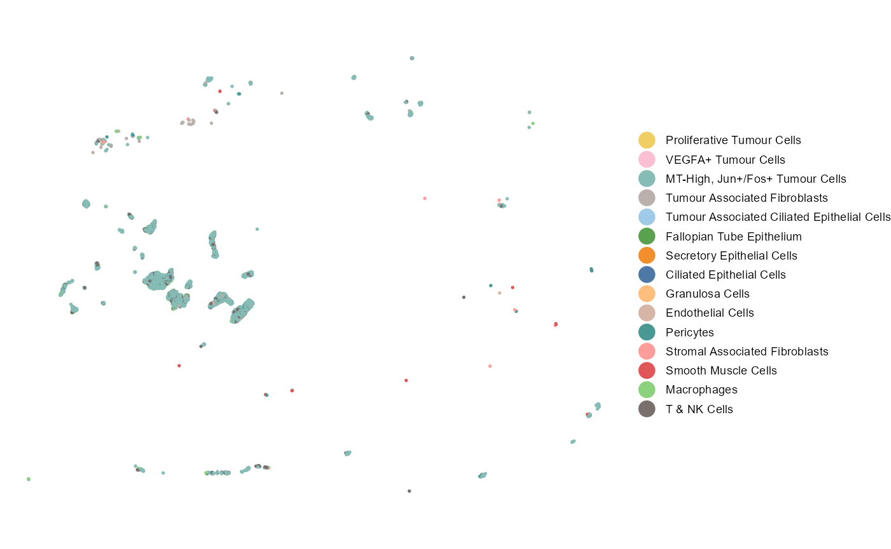
Cluster comparison
Differential expression analyses identify genes associated with
distinct SCNA-defined cell populations across spatial clusters using
compare_spatial_clusters(). This function performs
differential expression testing and Gene Ontology enrichment analysis
between selected spatial clusters.
Genes are filtered using log-fold change and adjusted p-value thresholds to identify up- and downregulated markers. Functional enrichment analyses of significantly upregulated genes reveal biological processes associated with each spatial cluster.
Below, Cluster 1 (tumour-associated) and Cluster 2 (non-malignant) are compared as an example.
# Compare Cluster 1 vs 2
cluster1v2 <- compare_spatial_clusters(
xenium.obj,
ident_1 = "1",
ident_2 = "2")
# Differentially expressed genes
head(cluster1v2$de)
#> p_val avg_log2FC pct.1 pct.2 p_val_adj
#> H19 0 3.6709337 0.888 0.111 0
#> CD47 0 3.1226967 0.800 0.049 0
#> LAPTM4B 0 3.3033381 0.779 0.032 0
#> YWHAZ 0 1.2678262 0.752 0.083 0
#> NORAD 0 0.8549308 0.766 0.109 0
#> HNRNPD 0 0.7824252 0.782 0.126 0
# GO enrichment dot plot
cluster1v2$go_dotplot
# GO enrichment cnet plot
cluster1v2$go_cnetplot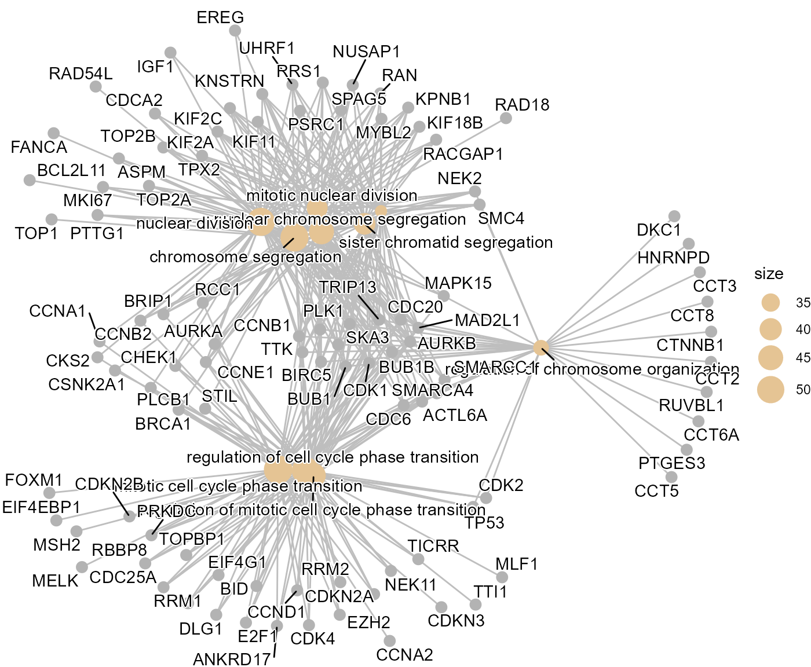
Genomic hotspots
Differentially expressed genes are mapped across the genome using
plot_gene_density(). Rather than being randomly
distributed, differentially expressed genes cluster within specific
genomic regions and form local hotspots associated with the underlying
inferred SCNAs.
Visualising these hotspots facilitates identification of candidate driver genes and genomic regions that may contribute to cancer progression.
# Custom driver genes
driver_genes <- c("MYC", "PIK3CA", "CCNE1", "KRAS",
"TERT","AKT1", "AKT2", "AKT3", "CCND1",
"CCND2", "CCND3", "KRAS", "MECOM")
# Plot gene density
plot_gene_density_obj <- plot_gene_density(
de_results = cluster1v2$de,
driver_genes = driver_genes,
raised_driver_genes = c("MECOM","AKT2")
)
Identification of key gene clusters
Differentially expressed genes are grouped into local genomic
clusters using identify_gene_clusters(). Genes located
within 2 Mb of one another are assigned to the same cluster.
gene_clusters <- identify_gene_clusters(
de_results = cluster1v2$de)plot_gene_clusters() visualises the genomic distribution
of these clusters and can highlight known driver genes within clustered
regions. This facilitates interpretation of the genomic regions
underlying cluster-specific transcriptional programmes. In this ovarian
cancer dataset, several of the largest gene clusters occur within
chromosome arms showing recurrent gains in the tumour population and
overlap established HGSOC driver genes, including MECOM, PIK3CA, MYC and
CCND1.
# Plot gene clusters
plot_gene_clusters(gene_clusters = gene_clusters,
driver_genes = driver_genes,
raised_driver_genes = c("MECOM","AKT2")
)
Chromosome-level visualisations are generated using
plot_gene_clusters_by_chromosome(). Individual chromosomes
can be explored in greater detail, with optional overlays of genomic
density signals and driver gene annotations. Chromosome 3 is shown as an
example below.
# Plot gene clusters chromosome 3
plot_gene_clusters_by_chromosome(
gene_clusters = gene_clusters,
chromosome = "chr3",
density = plot_gene_density_obj$signal_gr,
driver_genes = driver_genes,
raised_driver_genes = c("MECOM", "AKT2")
)
Summary
This vignette demonstrated the complete SpatialCopyInference workflow using a human ovarian cancer dataset, from data import, quality control, normalisation, visualisation, SCNA inference, spatial clustering, differential expression analyses and identification of genomic hotspots and gene clusters associated with distinct spatial cell populations.
The same workflow can be applied to other Xenium datasets to identify SCNA-defined cell populations to study early cancer development.
# Save processed Xenium object for downstream analyses
saveRDS(xenium.obj,
file = "Xenium_ovarian.rds")Example downstream analyses focusing on the intermediate cell population within the histologically normal fallopian tube are available here.